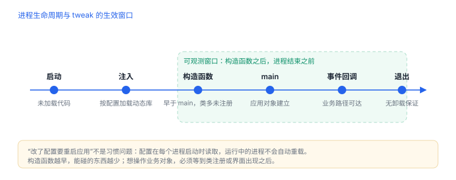
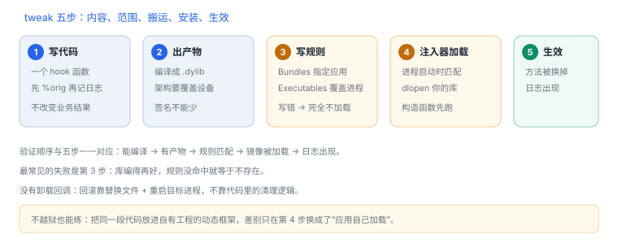

tweak 是什么：组成、加载与原理
tweak 就是“被注入的动态库 + 注入规则”，其余都是细节
如果只记一句：tweak 是一个动态库，由越狱环境的注入器在目标进程启动时加载进来，在里面改方法实现。它不是什么特殊格式，就是一个 .dylib，加一份“注入到谁”的规则。
场景 你想让某个应用在请求令牌时多打一行日志。改源码要重新打包分发，而 tweak 的做法是：写一个几十行的动态库，告诉注入器“只在目标进程里加载它”，进程一启动，方法就被换掉了。
1. 三个组成部分
| 组成 | 是什么 | 没有它会怎样 |
|---|---|---|
动态库（.dylib） | 你的代码，构造时装 hook | 没有逻辑可执行 |
| 注入规则（filter plist） | 按 bundle / 可执行名 / 类名匹配进程 | 不知道加载到哪个进程 |
| 注入器 | 越狱环境提供的加载框架 | 库永远不会被载入 |
三者的关系是“内容 + 范围 + 搬运”。日常说的“装一个 tweak”，实际是把前两者打成包，交给第三者在运行时搬运。
2. 它是怎么进到进程里的
- 目标进程
exec，加载器开始工作。 - 注入器在进程启动早期介入，读取注入规则。
- 规则匹配当前进程，命中则
dlopen你的库。 - 库的构造函数执行（早于应用
main）。 - 构造函数里安装 hook：改方法表或指令入口。
- 进程正常运行，命中 hook 时走你的实现；退出时没有卸载回调。

main；窗口之外（加载前、退出后）什么都做不了。
3. Logos 只是语法糖
很多教程用 %hook 写法，看起来像新语言，其实编译后就是方法交换。两种写法等价：
Logos 写法（Tweak.xm）
%hook LoginService
- (NSString *)requestToken:(NSString *)account {
NSLog(@"[tweak] account=%@", account);
return %orig; // 调用原实现
}
%end等价的 Objective-C 写法
static IMP gOrig = NULL;
NSString *LoggedRequest(LoginService *self, SEL _cmd, NSString *account) {
NSLog(@"[tweak] account=%@", account);
return ((NSString *(*)(id, SEL, NSString *))gOrig)(self, _cmd, account);
}
// 构造函数里：
Method m = class_getInstanceMethod(NSClassFromString(@"LoginService"),
@selector(requestToken:));
gOrig = method_getImplementation(m);
method_setImplementation(m, (IMP)LoggedRequest);看懂第二段，就明白 %orig 只是“保存原实现的函数指针，再调用它”。%hook 帮你生成了这些样板。
4. 注入规则长什么样
filter plist（示意）
Filter = {
Bundles = (com.example.target); // 按 bundle id 匹配
Executables = ("TargetApp"); // 或按可执行名
Classes = ("LoginService"); // 仅当该进程加载了此类
};三个键可以组合：Bundles 限定应用，Executables 覆盖非 App 进程，Classes 做“加载了才注入”的懒匹配。
5. 不越狱也能练：把它当成“自己的动态框架”
机制里只有“谁把库加载进来”这一环依赖越狱。在自己的工程里，你可以直接加一个动态框架，在构造函数里做同样的事：
自有工程中的等价练习
// 1) 新建 Dynamic Framework 目标，加入主 App
// 2) 在框架里写：
__attribute__((constructor))
static void install(void) {
dispatch_async(dispatch_get_main_queue(), ^{
Class cls = NSClassFromString(@"LoginService");
Method m = cls ? class_getInstanceMethod(cls, @selector(requestToken:)) : NULL;
if (m) method_setImplementation(m, (IMP)LoggedRequest);
});
}这就是“tweak 的全部原理”，只是加载者是应用自己而不是注入器。先在这里跑通，再去越狱设备上只是换了个搬运工。
6. 作用域：注入的进程集合
| 范围 | 怎么实现 | 风险 |
|---|---|---|
| 单个应用 | Bundles 指定一个 id | 低 |
| 多个应用 | 列出多个 id 或按可执行名 | 随应用版本变化而失效 |
| 主屏进程 | 注入界面进程 | 崩溃导致界面重启 |
| 守护进程 | 按可执行名匹配 | 影响面最大，最难恢复 |
7. 配置与跨进程
- 配置放偏好设置，各进程各自读取；改完必须重启目标进程才生效。
- 进程间没有共享内存，同步靠文件或通知。
- 同进程里多个 tweak 可能 hook 同一方法，顺序不确定，表现为“有时生效”。
没有“卸载”这回事
进程退出即结束，不存在安全卸载回调。依赖退出清理的逻辑都不成立；要清理就在显式时机做。
进程退出即结束，不存在安全卸载回调。依赖退出清理的逻辑都不成立；要清理就在显式时机做。
8. 失败分流
| 现象 | 原因 | 查哪里 |
|---|---|---|
| 完全没反应 | 规则没匹配上，库根本没加载 | 进程里能否看到该镜像 |
| 改了配置没反应 | 目标进程未重启 | 进程是否重新加载 |
| 构造函数里崩溃 | 访问了未初始化的应用对象 | 延后到主队列或首次使用 |
| 偶发不生效 | 多 tweak 冲突或加载顺序 | 减少 hook，隔离验证 |
| 主屏反复重启 | 注入界面进程后崩溃 | 缩小作用域到单应用 |
9. 自测
- tweak 的三个组成部分分别解决什么问题？
%orig在底层对应什么操作？- 为什么“不越狱也能练”？差别只在哪一环？
- 改了配置却只有部分界面生效，最可能的原因是什么？